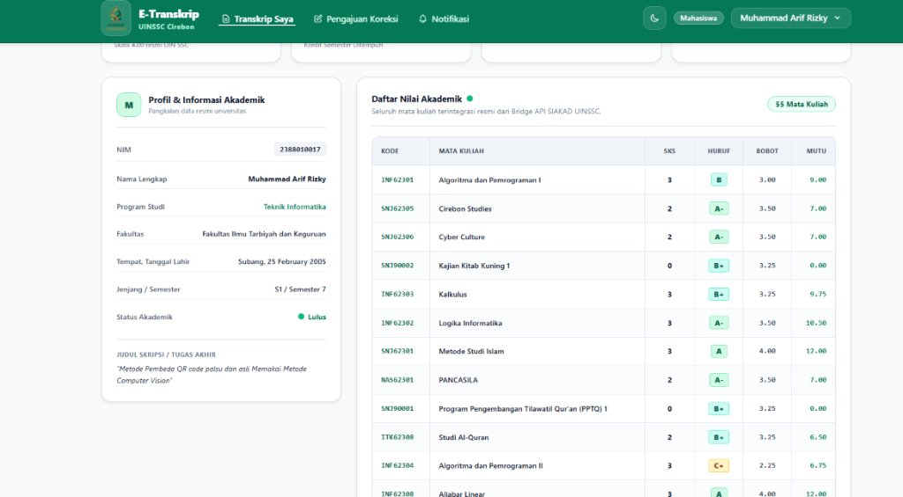

01
Latar Belakang
Permasalahan
- Pengurusan transkrip masih manual: datang ke fakultas, antre & menunggu berhari-hari.
- Rekap nilai tersebar di banyak berkas, rawan salah ketik & salah hitung IPK.
- Sulit membedakan transkrip asli dengan transkrip yang dipalsukan.
- Mahasiswa tidak tahu status proses pengesahan transkripnya.
02
Solusi
Fungsi & Tujuan
- Digitalisasi penerbitan transkrip — diakses kapan saja & di mana saja.
- Otomatisasi perhitungan SKS, IPK & predikat sesuai aturan bobot nilai.
- Anti pemalsuan — setiap dokumen memiliki kode QR verifikasi publik.
- Transparan — status validasi & notifikasi terpantau langsung.
03
Integrasi Data
Sumber Data Terpadu
SIAKAD Bridge APISinkron otomatis fakultas, prodi, mahasiswa, mata kuliah & nilai.
e-Wisuda UINSSCData wisudawan, judul skripsi & tanggal kelulusan.
Import ExcelUnggah massal mahasiswa, nilai & wisudawan via template.
Cara Kerja
Alur Penggunaan Aplikasi
1
LoginAdmin dengan email, mahasiswa dengan NIM.2
SinkronisasiNilai ditarik dari SIAKAD & e-Wisuda.3
Hitung OtomatisSKS, IPK & predikat dihitung sistem.4
Verifikasi FakultasAdmin Fakultas memeriksa & memvalidasi.5
PengesahanSuper Admin mengesahkan transkrip.6
Terbit PDF A4Dokumen resmi + tanda tangan & QR.7
UnduhMahasiswa mengunduh transkripnya.8
Verifikasi QRSiapa pun bisa cek keaslian dokumen.Transparan & Berjenjang
4 Tahap Status Validasi Transkrip
Ditolak / Perlu Perbaikan → dikembalikan dengan catatan
01
DraftNilai tersinkron, transkrip otomatis disusun oleh sistem.02
Menunggu ValidasiMasuk antrean pemeriksaan Admin Fakultas.03
TerverifikasiLolos verifikasi fakultas, menunggu pengesahan Super Admin.04
Valid / DisahkanTranskrip resmi terbit & siap diunduh mahasiswa.Panduan Pengguna
Fitur Berdasarkan Peran
Super AdminPustikom / Universitas
Pengesahan TranskripRatifikasi akhir transkrip dari seluruh fakultas.
Kelola Admin FakultasBuat akun, setujui permintaan, aktif/nonaktifkan.
Aturan Bobot NilaiAtur konversi nilai huruf ke bobot (A = 4.00, dst).
Monitoring & Audit LogPantau mahasiswa, wisudawan & seluruh aktivitas.
Admin FakultasOperator Akademik
Sinkronisasi SIAKADFakultas, prodi, mata kuliah, mahasiswa & nilai.
Input Nilai Manual & MassalDengan deteksi konflik & riwayat perubahan nilai.
Validasi TranskripPeriksa, setujui, atau kembalikan dengan catatan.
Proses Pengajuan KoreksiTindak lanjuti laporan koreksi dari mahasiswa.
MahasiswaLogin dengan NIM
Transkrip SayaLihat IPK, total SKS, predikat & daftar nilai lengkap.
Unduh PDF ResmiTranskrip A4 ber-QR Code setelah disahkan.
Pengajuan KoreksiLaporkan nilai atau data yang keliru secara online.
NotifikasiKabar setiap perubahan status transkrip.
04
Tampilan Aplikasi
Dashboard Mahasiswa

Profil akademik & daftar nilai terintegrasi SIAKAD, dilengkapi paginasi & mode gelap.
05
Teknologi
Dibangun Dengan
Laravel 13Backend & MVC
Tailwind CSSUI responsif
Alpine.jsInteraksi dinamis
DomPDFCetak PDF A4
Simple QrCodeQR verifikasi
Laravel ExcelImport / export
REST API BridgeSIAKAD & e-Wisuda
Role-Based AccessHak akses per peran
06
Nilai Lebih
Keunggulan
Valid & Anti PalsuQR Code terhubung ke halaman verifikasi resmi.
Cepat & OtomatisIPK & predikat dihitung tanpa input ulang.
TransparanRiwayat status & audit log tercatat lengkap.
ResponsifNyaman di HP, tablet & desktop + dark mode.